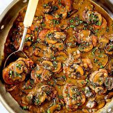

Pord Medallions Recipe

Description
Here is a great recipe for a perfect pork medallion.
You will be needing the following items to complete this recipe!
- ¼ cup all-purpose flour
- 1 teaspoon garlic salt, or to taste
- ½ teaspoon freshly ground black pepper, or to taste
- 2 pounds pork tenderloin, cut into 1 1/2 inch pieces
- 2 tablespoons olive oil
- ⅓ cup balsamic vinegar
- ½ cup chicken broth
- 2 teaspoons minced lemon zest, or to taste
- 1 tablespoon capers, or to taste
- Place the flour, garlic salt, and pepper into a plastic bag. Shake to mix, the add the pork tenderloin pieces, and shake again to coat. Shake off the excess flour.
- Heat the oil in a large skillet over medium-high heat. Cook the pork medallions in the hot oil until golden-brown on both sides, 2 to 3 minutes per side. Pour in the balsamic vinegar and chicken broth. Bring to a boil, then reduce heat to medium, and simmer until the pork is no longer pink in the center, 3 to 4 minutes. Remove the pork to a serving platter, then stir the lemon zest and capers into the simmering sauce. Continue simmering until the sauce has thickened to your desired consistency.